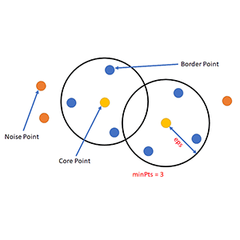
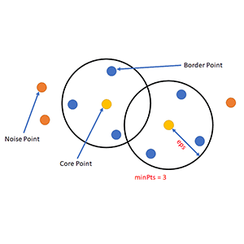

Fundamental Machine Learning Models
Supervised Learning
Supervised learning models are trained on labeled data, where the input features are mapped to known output labels. Examples include linear regression, logistic regression, decision trees, and support vector machines.


Unsupervised Learning
Unsupervised learning models are trained on unlabeled data, where the algorithm tries to find patterns or relationships in the data without explicit guidance. Examples include clustering algorithms like K-means clustering, hierarchical clustering, and DBSCAN.

 

Reinforcement Learning
Reinforcement learning models learn by interacting with an environment and receiving feedback in the form of rewards or penalties. They aim to find the optimal action-selection strategy to maximize cumulative rewards. Examples include Q-learning, deep Q-networks (DQN), and policy gradients.